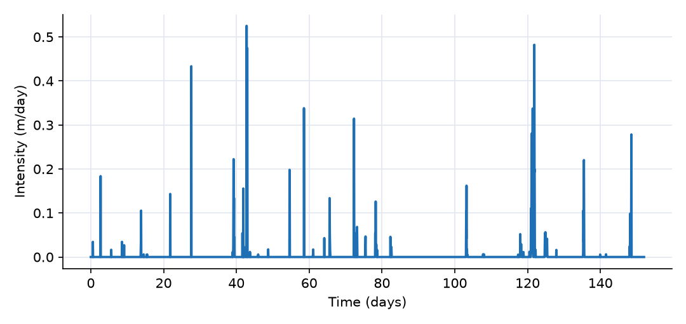
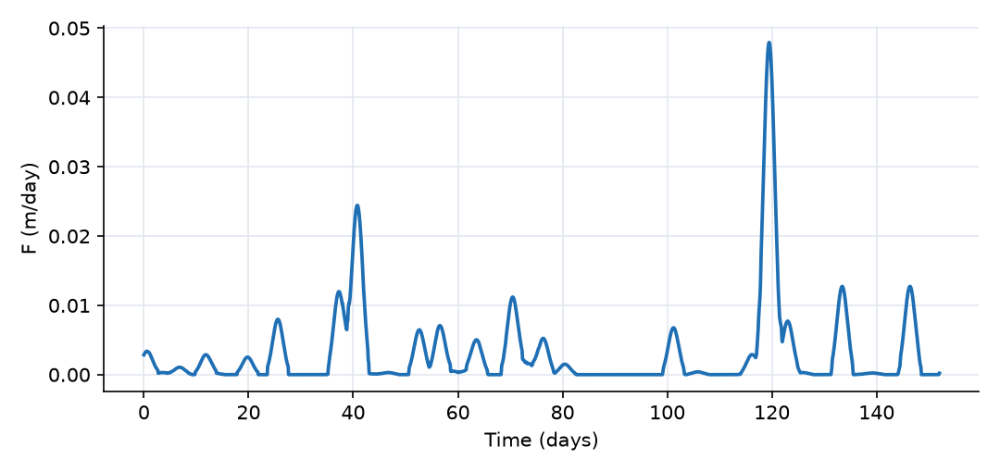
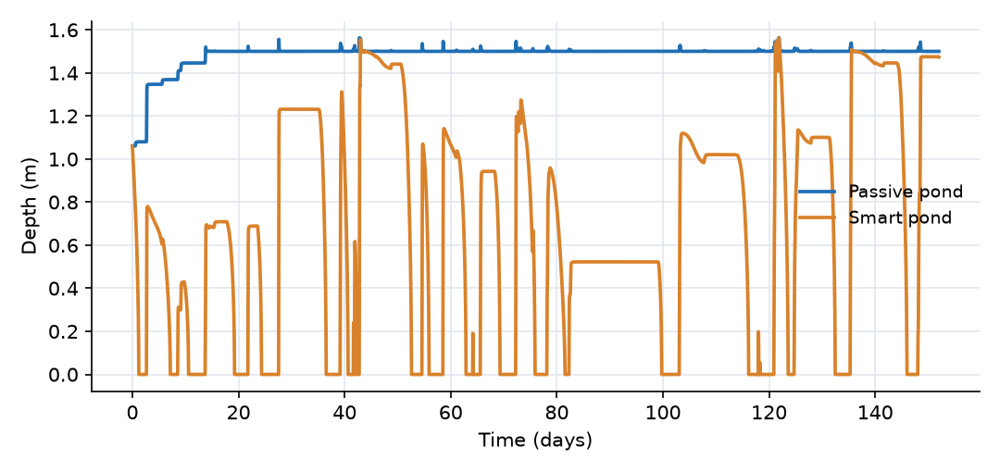
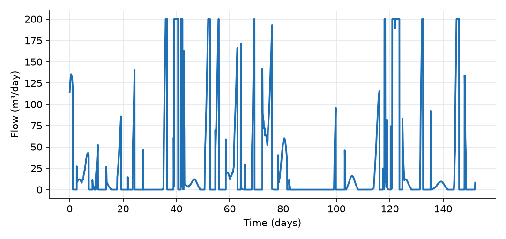
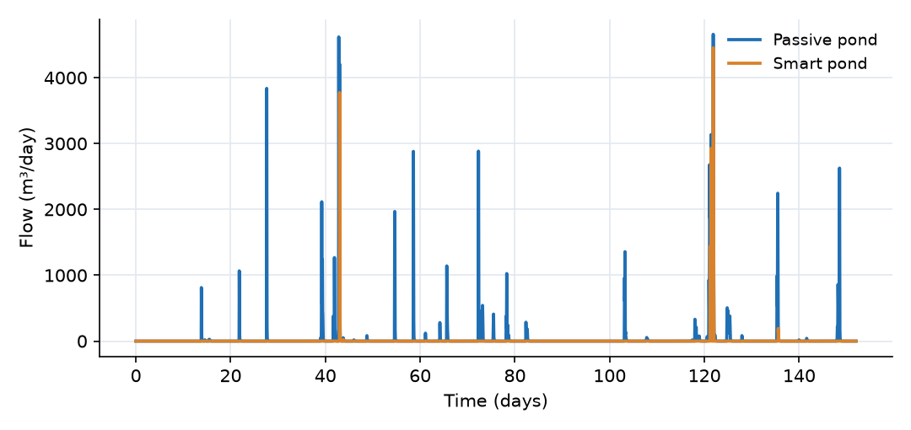

What this model represents
A conventional stormwater pond is passive: its outlet is a fixed orifice or weir, so the pond cannot tell a dry week from the day before a hurricane. If the pond is meant to keep water (for irrigation, for a permanent pool that settles sediment, or to avoid sending water downstream at all), it is usually full when the next storm arrives and the storm runs straight over the spillway.
A smart pond (also called real-time control, or continuous monitoring and adaptive control, CMAC) adds an actuated valve and a rule that uses a rainfall forecast. When rain is expected, the valve opens and the pond releases water slowly, at a rate the receiving stream can take, so that the pond has room when the storm arrives. When no rain is expected, the valve stays closed and the pond keeps its water.
This example runs two identical 1 ha paved catchments, each draining to an identical 300 m³ pond, through five months of observed hourly rainfall (June to October 2010). The only difference is the valve:
- Smart_Pond has a forecast-controlled valve plus a spillway.
- Passive_Pond has only the spillway.
Comparing the two shows what pre-release buys (less overflow) and what it costs (less water kept in storage).
How it works
Runoff. Each catchment is a single paved surface. Rain enters its storage and leaves by kinematic sheet flow (Catchment_link):
Q = 86400 · (W/n) · S^½ · (d − d_s)₊^(5/3)
with width W = 100 m, slope S = 0.01, n = 0.015, depth d = storage/area and depression storage d_s = 1 mm. Q is in m³/day.
Ponds. Both ponds have the power-law stage-storage relation S = α·d^β with α = 133.3 and β = 2, so
d ≈ (S/α)^(1/β), surface area = α·β·d^(β−1)
(The code evaluates d = (S²/(α(S + 0.1)))^(1/β), which equals (S/α)^(1/β) except for a smoothing below about 0.1 m³.) At the crest depth of 1.5 m each pond holds 300 m³ (30 mm of runoff from its catchment) and has a 400 m² water surface. Rain also falls directly on the pond surface, at a rate equal to intensity × surface area. There is no evaporation or seepage.
Spillways. Each pond spills over a weir, Q = α_w · (h − z_c)₊^β_w with α_w = 290,000 m³/day per m^1.5, β_w = 1.5 and crest z_c = 1.5 m. This is a broad-crested weir with a discharge coefficient of about 1.7 m^0.5/s and a length of 2 m.
Forecast indicator. The valve reads the rainfall file directly and computes a kernel-weighted rainfall intensity over the coming days (kernel_smoothed_forcast):
F(t) = ∫ i(τ) · (1/(σ√(2π))) · exp(−(τ − t − μ)² / (2σ²)) dτ, τ from t + μ − 2σ to t + μ + 2σ
where i is the rain intensity (m/day), μ is the kernel_delay_parameter (2 days) and σ the kernel_spread_parameter (1 day). The integral is evaluated with the trapezoidal rule on the rainfall series and truncated at ±2σ, so it covers 95 % of the kernel weight. With μ = 2σ the window runs from now to 4 days ahead: F never looks at past rain. F has the units of an intensity. For example, 12.5 mm of rain falling exactly 2 days ahead gives F = 0.0125 m × 0.399 day⁻¹ = 0.005 m/day; the same rain 3.5 days ahead counts for about a third as much.
Because F is computed from the observed record, this is a perfect forecast blurred in time. The kernel spreads each storm over several days, which mimics uncertainty in timing but not in amount. (The plugin also provides Flow_control_device (function uncertain) variants that blend the real record with a corrupted one to represent forecast error.)
Valve rule. The release is a piecewise-linear function of F:
| Condition | Release |
|---|---|
| F < S_min | c·Q_min |
| S_min < F < S_max | c·(Q_min + (F − S_min)/(S_max − S_min) · (Q_max − Q_min)) |
| F > S_max | c·Q_max |
with S_min = 0, S_max = 0.005 m/day, Q_min = 0, Q_max = 200 m³/day and flow coefficient c = 1. At full opening the valve can empty a full pond in 1.5 days. The conditions are strict inequalities, so a value of F exactly equal to S_min or S_max matches no branch and gives zero release. With Q_min = 0 this has no effect here; with a nonzero Q_min and S_min = 0 the valve would close completely whenever no rain at all is forecast.
The release does not depend on the water level: the device behaves like a pump or a flow-regulating valve. When the pond runs dry, the solver limits the outflow of the empty pond so its storage cannot become negative, and the reported valve flow drops to whatever is flowing in.
Time step. max_timestep_increase_factor = 1 keeps every step at 0.01 day (14.4 minutes). With larger steps the pond and catchment water balances in this model failed to close by up to 3 %, so the step is held fixed; the run then takes about 10 seconds.
What to look for in the results
- Pre-release before each storm. F rises one to three days before each storm. The smart pond is drawn down, and by the start of every large storm in the record it is empty. During the 30 mm storm of day 39 (10 July) the smart pond fills only to 1.31 m and does not spill, while the passive pond, already full, spills its entire inflow.
- Holding water after storms. After a storm passes, F drops back to zero within a day or two if nothing else is forecast, the valve closes, and the smart pond keeps whatever it caught. Its level then stays flat until the next forecast.
- Overflow reduction. Over the 152 days, about 4,830 m³ of runoff reaches each pond. The passive pond spills 4,870 m³ (all of the runoff plus the rain on its surface, in about 30 separate spills). The smart pond spills 1,030 m³, about 21 %, and the remaining 3,780 m³ leaves through the valve at no more than 200 m³/day (2.3 L/s).
- Limits of pre-release. Two events are too large for a 300 m³ pond even when it starts empty: 47 mm on day 42 (13 July), which arrived three days after a 30 mm storm and one day after another 10 mm, and 118 mm on day 121 (30 September). In these the smart pond fills and spills with peaks of 3,770 and 4,450 m³/day, against 4,620 and 4,660 m³/day from the passive pond. Pre-release reduces the overflow volume of large storms but does not attenuate their peak.
- The cost. The smart pond holds on average 98 m³ (33 % of capacity) and is empty 29 % of the time; the passive pond averages 295 m³. Each opening of the valve trades stored water for capacity, including for forecasts of storms that turn out small. Raising S_max, shortening the forecast window or adding a Q_min changes this trade-off.
Assumptions and limitations
- The forecast is the observed rainfall, smoothed by the kernel. Real forecasts also miss or overstate storms; this model gives an upper bound on the benefit of forecast-based control.
- The valve release is imposed and independent of head. A real valve or orifice would release less at low water levels.
- No evaporation, infiltration or water withdrawal from the ponds. In a real harvesting or wet pond, evaporation would draw down the passive pond between storms and give it some capacity.
- The catchments are fully paved, with no infiltration, so all rain except depression storage becomes runoff.
- Downstream effects are not modelled: the stream is a fixed head, so the benefit of releasing water at 200 m³/day in place of spilling at over 4,000 m³/day is visible only in the flow rates.
Model diagram
Hover a block or link to see its name and type. Arrows show the positive flow direction.
Components
Click a component to see every property set in the model file, with units and meaning.
Blocks 5
Storage compartments: each holds water (and dissolved or particulate mass) and has a state that evolves in time.
Catchment_ACatchment1 ha paved surface (parking lot or roof) draining to the smart pond: kinematic sheet flow with 100 m flow width, slope 0.01, Manning n = 0.015 and 1 mm of depression storage.
Catchment: Catchment
| Property | Value | Unit | Meaning |
|---|---|---|---|
| Catchment area | 10000 | m2 | Total horizontal surface area of the catchment. Used to compute initial storage and flow-related parameters. |
| The width of the catchment | 100 | m | The average width of the catchment perpendicular to the dominant flow direction |
| Catchment slope in the direction of flow | 0.01 | The average slope of the catchment along the dominant flow direction | |
| Manning's Roughness Coefficient | 0.015 | The Manning's roughness coefficient representing surface resistance to flow. Typical values vary by land cover type. | |
| Depression storage | 0.001 | m | The depth of water that is retained in surface depressions and does not contribute to surface runoff. |
| Runoff coefficient | 1 | This is the fraction of rain that converts to runoff in case infiltration is not explicitly modeled | |
| Loss coefficient | 0 | 1/day | A coefficient representing losses (e.g., infiltration or leakage) as a first-order rate constant. Used in loss expression. |
| Mean elevation of the catchment | 5 | m | The elevation of the centroid of the catchment based on the model datum. |
| Average water depth | 0 | m | The initial depth of the standing water before the simulation start time. Most of the times, this value is zero |
| Precipitation | Rain | m^3/day | A precipitation source object must be selected. |
Catchment_BCatchmentIdentical to Catchment_A, draining to the passive pond.
Catchment: Catchment
| Property | Value | Unit | Meaning |
|---|---|---|---|
| Catchment area | 10000 | m2 | Total horizontal surface area of the catchment. Used to compute initial storage and flow-related parameters. |
| The width of the catchment | 100 | m | The average width of the catchment perpendicular to the dominant flow direction |
| Catchment slope in the direction of flow | 0.01 | The average slope of the catchment along the dominant flow direction | |
| Manning's Roughness Coefficient | 0.015 | The Manning's roughness coefficient representing surface resistance to flow. Typical values vary by land cover type. | |
| Depression storage | 0.001 | m | The depth of water that is retained in surface depressions and does not contribute to surface runoff. |
| Runoff coefficient | 1 | This is the fraction of rain that converts to runoff in case infiltration is not explicitly modeled | |
| Loss coefficient | 0 | 1/day | A coefficient representing losses (e.g., infiltration or leakage) as a first-order rate constant. Used in loss expression. |
| Mean elevation of the catchment | 5 | m | The elevation of the centroid of the catchment based on the model datum. |
| Average water depth | 0 | m | The initial depth of the standing water before the simulation start time. Most of the times, this value is zero |
| Precipitation | Rain | m^3/day | A precipitation source object must be selected. |
Smart_PondPond · Pond_PluginPond with storage S = 133.3·d² (300 m³ and 400 m² at the 1.5 m spillway crest). It drains through the forecast-controlled valve and, when full, over its spillway. Starts at 150 m³.
Pond: Stormwater pond
| Property | Value | Unit | Meaning |
|---|---|---|---|
| The coefficient (α) in the rating curve S = α d^β | 133.3 | The coefficient (α) in the pond volume-depth relationship: Storage = alpha * depth^beta. | |
| The exponent (β) in the rating curve S = α d^β | 2 | The exponent (β) in the pond volume-depth relationship: Storage = alpha * depth^beta. | |
| Bottom elevation of pond | 0 | m | |
| Initial Storage | 150 | m3 | Initial volume of water stored in the pond at the beginning of the simulation. |
| precipitation time series | Rain | m^3/day | Select a precipitation source object that provides rainfall input to the pond. |
Passive_PondPond · Pond_PluginIdentical pond with no valve: water leaves only over the spillway. This is the baseline.
Pond: Stormwater pond
| Property | Value | Unit | Meaning |
|---|---|---|---|
| The coefficient (α) in the rating curve S = α d^β | 133.3 | The coefficient (α) in the pond volume-depth relationship: Storage = alpha * depth^beta. | |
| The exponent (β) in the rating curve S = α d^β | 2 | The exponent (β) in the pond volume-depth relationship: Storage = alpha * depth^beta. | |
| Bottom elevation of pond | 0 | m | |
| Initial Storage | 150 | m3 | Initial volume of water stored in the pond at the beginning of the simulation. |
| precipitation time series | Rain | m^3/day | Select a precipitation source object that provides rainfall input to the pond. |
Streamfixed_headFixed-head receiving water at −1 m, below both pond bottoms, so neither outlet is affected by tailwater.
fixed_head: Fixed-head boundary
| Property | Value | Unit | Meaning |
|---|---|---|---|
| Head | -1 | m | |
| Initial Storage | 100000 | m3 |
Links 5
Connections that move water (and the mass it carries) between blocks.
Runoff_ACatchment_linkCatchment_link: sheet flow from Catchment_A to the smart pond.
Catchment_link: Link from a catchment
Runoff_BCatchment_linkCatchment_link: sheet flow from Catchment_B to the passive pond.
Catchment_link: Link from a catchment
Forecast_ValveFlow_control_device_(Gaussian_Kernel) · precipitation_forcastFlow_control_device_(Gaussian_Kernel): a controlled outlet whose release is set by a kernel-weighted rainfall forecast for the next 4 days (mean lead 2 days, spread 1 day). Closed when no rain is forecast, fully open (200 m³/day) when the forecast indicator reaches 5 mm/day.
Flow_control_device_(Gaussian_Kernel): Flow control device (Gaussian Kernel)
| Property | Value | Unit | Meaning |
|---|---|---|---|
| Precipitation intensity | rainfall.csv | ||
| Mean kernel delay time | 2 | day | The mean delay time of the gaussian kernel function for precipitation forcast |
| Kernel spread parameter | 1 | day | The spread parameter of the kernel function for precipitation forcast |
| Lower precipitation threshold | 0 | m/day | |
| Upper precipitation threshold | 0.005 | m/day | |
| Minimum flow | 0 | m3/day | |
| Maximum flow | 200 | m3/day | |
| Flow multiplier | 1 | This coefficient is multiplied by the Qmin and Qmax for flow control, often to correct for contributing catchment area |
Smart_Spillwaywier · Pond_PluginEmergency spillway of the smart pond: weir Q = 290,000·(h − 1.5)^1.5 m³/day, crest at 1.5 m.
wier: Weir based on a power-law rating curve
| Property | Value | Unit | Meaning |
|---|---|---|---|
| Crest Elevation | 1.5 | m | |
| Coefficient alpha in Q=alpha*(h-z_0)^beta (SI-day units) | 290000 | ||
| Exponent beta in Q=alpha*(h-z_0)^beta | 1.5 |
Passive_Spillwaywier · Pond_PluginSpillway of the passive pond, identical to Smart_Spillway.
wier: Weir based on a power-law rating curve
| Property | Value | Unit | Meaning |
|---|---|---|---|
| Crest Elevation | 1.5 | m | |
| Coefficient alpha in Q=alpha*(h-z_0)^beta (SI-day units) | 290000 | ||
| Exponent beta in Q=alpha*(h-z_0)^beta | 1.5 |
Sources 1
External inputs or sinks applied to blocks: rainfall, evaporation, loads, exchange with the atmosphere.
RainPrecipitationObserved hourly rainfall, June to October 2010 (484 mm in 152 days). It falls on both catchments and directly on both pond surfaces.
Precipitation: Precipitation
| Property | Value | Unit | Meaning |
|---|---|---|---|
| Precipitation Cumulative | rainfall.csv | m |
Input files
rainfall.csv | Hourly rainfall, three columns, no header: interval start (day), interval end (day), rain depth in the interval (m). Day 0 is 1 June 2010 00:00. Observed data from a Baltimore/Washington airport gauge, regridded to complete hourly intervals; it runs to 11 November 2010 so that the 4-day forecast window is filled until the end of the run. The record was distributed with earlier OpenHydroQual examples; its likely origin is the NOAA hourly precipitation archive. |
Simulation settings
| Start time | 0 |
| End time | 152 |
| Initial time step | 0.01 |
| Write interval (steps) | 1 |
Results
Produced by running the downloaded model unchanged.




